- Overview
- Managing Roles
- Managing Permissions
- PM_LOGIN
- PM_SETUP
- PM_USERS
- PM_FACTORY
- PM_CASES
- PM_ALLCASES
- PM_REASSIGNCASE
- PM_SUPERVISOR
- PM_SETUP_ADVANCE
- PM_DASHBOARD
- PM_WEBDAV
- PM_EDITPERSONALINFO
- PM_FOLDERS_VIEW
- PM_FOLDERS_ADD_FOLDER
- PM_FOLDERS_ADD_FILE
- PM_DELETECASE
- PM_CANCELCASE
- PM_FOLDER_DELETE
- PM_SETUP_LOGO
- PM_SETUP_EMAIL
- PM_SETUP_CALENDAR
- PM_SETUP_PROCESS_CATEGORIES
- PM_SETUP_CLEAR_CACHE
- PM_SETUP_HEART_BEAT
- PM_SETUP_ENVIRONMENT
- PM_SETUP_PM_TABLES
- PM_SETUP_LOGIN
- PM_SETUP_DASHBOARDS
- PM_SETUP_LANGUAGE
- PM_SETUP_SKIN
- PM_SETUP_CASES_LIST_CACHE_BUILDER
- PM_SETUP_PLUGINS
- PM_SETUP_USERS_AUTHENTICATION_SOURCES
- PM_SETUP_LOGS
- PM_DELETE_PROCESS_CASES
- PM_EDITPERSONALINFO_CALENDAR
- PM_UNCANCELCASE
- PM_REST_API_APPLICATIONS
- Permissions to Edit the User Profile
- PM_REASSIGNCASE_SUPERVISOR
- Creating and Editing Roles
Overview
A role is a set of permissions used to access specific functionalities and resources in ProcessMaker. Each user is assigned a role, which determines what actions that user can perform in ProcessMaker and what parts of the interface that user can access.
Managing Roles
To see the available roles, log in to ProcessMaker with a user such as the "admin" who has the PM_USERS permission in his/her role. Then, go to Admin > Users > Roles and the following list will be displayed:
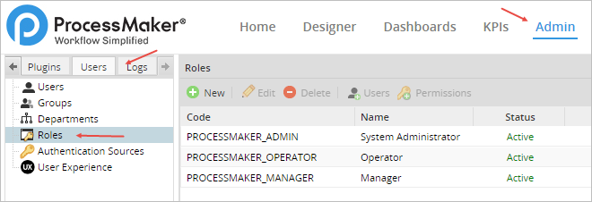
PROCESSMAKER_ADMIN
The PROCESSMAKER_ADMIN role is designed for system administrators and process designers who need access to all the features and functionalities in ProcessMaker. Users who are assigned this role can do everything, including configure the system, create and edit processes, manage users and groups, manage cases, and oversee productivity with reports and dashboards.
PROCESSMAKER_MANAGER
The PROCESSMAKER_MANAGER role is for users who need to manage cases, users and groups and oversee productivity, but do not need to design processes or configure ProcessMaker.
PROCESSMAKER_OPERATOR
The PROCESSMAKER_OPERATOR role is for normal production users who just need to log in and run cases.
Note: If a role is set as INACTIVE, and a user is assigned to that role, the user can NOT log in to ProcessMaker until the role is changed to ACTIVE
Managing Permissions
If these three sets of permissions do not suit your organization's needs, the three default roles can be modified and new roles can be created as well. To customize roles, see the following descriptions of the available permissions that can be assigned to a role.
Note: Remember that if any of the role's permissions are changed (removed/added), it is necessary to update the process design to fit the newly assigned or removed permissions.
The 3 roles explained below have the following permissions:
To see which permissions are assigned to a role, select the role and click on Permissions:
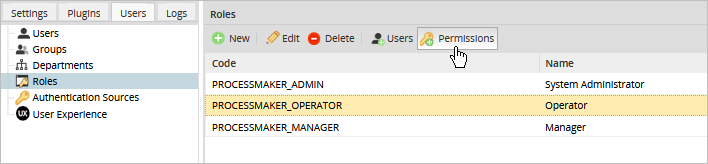
PM_LOGIN
The PM_LOGIN permission allows the user to log in to ProcessMaker. Every role should include this permission. Without this permission, the following error message will appear when trying to log in:
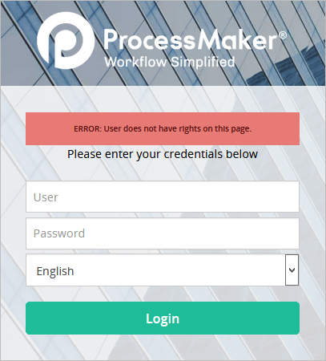
PM_SETUP
The PM_SETUP permission provides access to the ADMIN menu and its basic options, including Email Servers, Calendar, Process Category, Skins, Environment, Clear Cache, Login and Case Scheduler Log.
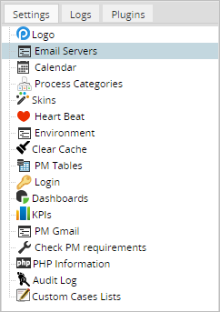
Note: Additional permissions have been created for each ADMIN functionality. These permissions must be accompanied by the PM_SETUP permission to gain access to the ADMIN menu.
PM_USERS
The PM_USERS permission provides access to the Users tab under the ADMIN menu and the ability to create, edit and delete users, groups, departments and roles.
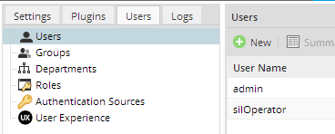
Note: This permission does NOT provide access to the ADMIN > Users > Authentication Sources option, which is provided by the PM_SETUP_ADVANCE permission.
PM_FACTORY
The PM_FACTORY permission provides access to the DESIGNER menu and allows the user to create, edit and delete processes.
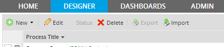
PM_CASES
The PM_CASES permission provides access to the HOME menu and the ability to run cases and view lists of cases that the user has been assigned to or participated in. This permission provides access to the Cases section in the sidebar and its suboptions: New Case, Inbox, Draft, Participated, Unassigned and Paused.
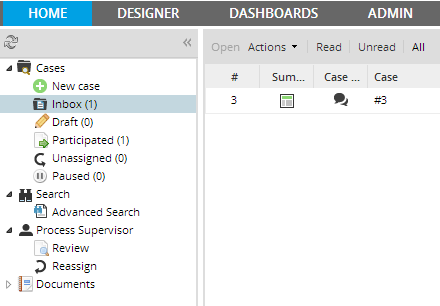
In addition, it provides access to the Documents option, which allows users to view any files that were uploaded (Input Documents and attached files) or generated (Output Documents) while running cases.
Warning: Users should only be able to view documents that they have permission to see.
PM_ALLCASES
The PM_ALLCASES permission provides access to the Advanced Search option under the HOME tab. Advanced Search permits users to search for particular cases among all cases of all users in the current workspace. This feature narrows the search using the following search criteria: Category, Process, Status, User, Delegated Date, and Case Number.
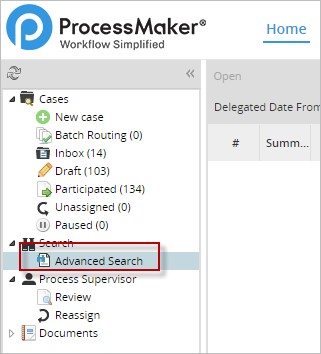
To search for a case, enter the search criteria and click on the Search button. All cases matching the search criteria will be listed as follows.

A case in the list can be opened by double-clicking on it or selecting the case and clicking on the Open button.

To view a case, the user needs to either be assigned to work on the case, given Process Permissions, or assigned as a Process Supervisor. Otherwise, only the details of the selected case will be shown.
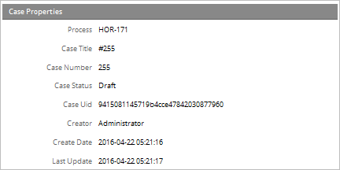
This permission must be accompanied by the PM_CASES permission to gain access to the Home menu.
PM_REASSIGNCASE
The PM_REASSIGNCASE permission provides the ability to reassign cases to other users. Note that a case can only be reassigned to users who are either in the assignment pool for the current task or in its ad hoc assignment pool. Other users can NOT be assigned to the case. Note that this permission enables the reassign option for all cases of all processes.
This permission adds the Reassign option to the Actions menu, which is available in the Inbox and Draft folders and when running a case. Note that it is NOT possible to reassign cases under the Review, Advanced, Participated, Participated or Paused options, nor is it possible when opening a case summary or viewing a case with read-only access with Process Permissions.
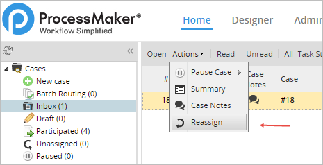
It also enables the Reassign option under the Process Supervisor menu.
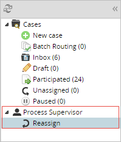
The PM_REASSIGNCASE permission needs to be accompanied by the PM_CASES permission to access the HOME menu.
PM_SUPERVISOR
The PM_SUPERVISOR permission allows a user to be assigned as a Process Supervisor, which allows a user to view and modify data in Dynaforms and Input Documents for designated processes. This permission adds the Supervisor section to the sidebar under the HOME menu. This option shows a list of cases that the Process Supervisor can review. Only cases with a To Do or Draft status are shown in the list, and the cases must be from processes where the user has been assigned as a Process Supervisor.
Note: Please take note that if the PM_SUPERVISOR permission is removed from the supervisor user's role, he/she won't be able to access the Review option in the Process Supervisor menu or perform any actions over the cases, even if he/she remains assigned as a user supervisor. Therefore, please remember that if any permission is changed, removed or added to a role, it is necessary to update the process design to fit the newly assigned or removed permissions.
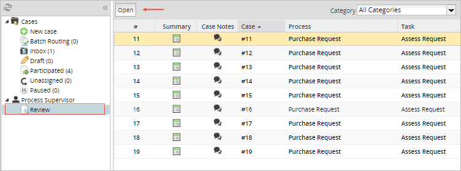
After opening the case, the Dynaforms and Output Documents that can be edited by the Process Supervisor will be available inside the Step List dialog box.
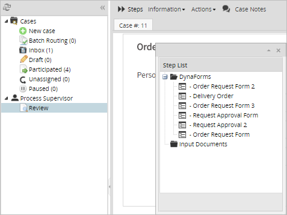
The PM_SUPERVISOR permission also allows the user to pause cases by going to Actions > Pause; however, it doesn't grant the power to delete, cancel or reassign cases. Separate permissions are needed for those abilities.
The PM_SUPERVISOR permission needs to be accompanied by the PM_CASES permission, to access the Home menu. It is a good idea to also assign Process Permissions to the Process Supervisor user; otherwise, he/she will not be able to use the standard Steps and Information menus to find out more about the case.
If the Process Supervisor user also has the PM_REASSIGNCASE_SUPERVISOR permission, the Reassign menu option will be available.
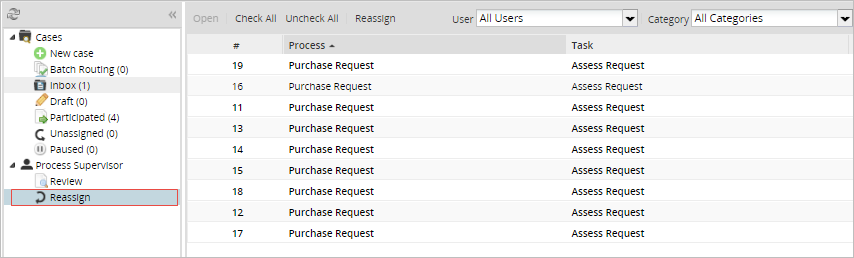
PM_SETUP_ADVANCE
The PM_SETUP_ADVANCE permission provides access to advanced setup options under the Admin menu. Depending on the option, this permision must be accompanied with the PM_SETUP_LOGO to access the Logo option, with the PM_SETUP_PM_TABLES permission to access the PM Tables option, Dashboards, Languages and Cases List Cache Builder options, which are under the Settings tab, the Plugins tab, and the Authentication Sources option under the Users tab.
This permission must be accompanied by the PM_SETUP permission to gain access to the Admin menu.
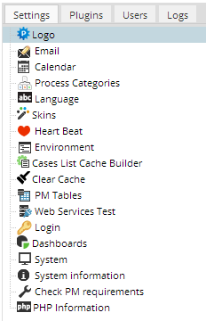
The PM_SETUP_ADVANCE permission also allows users to access a special URL to create new workspaces. For more information, read the Workspaces page.

PM_DASHBOARD
The PM_DASHBOARD permission provides access to the Dashboard menu and the ability to see the ratio of completed versus open cases for different time periods.
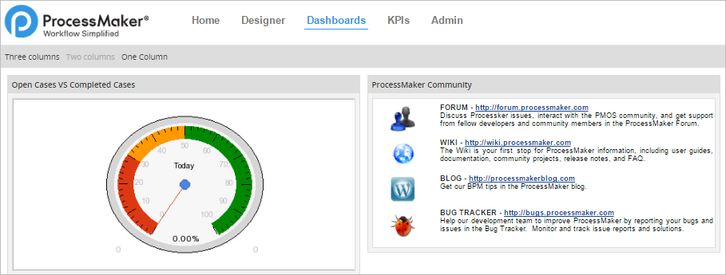
PM_WEBDAV
The PM_DASHBOARD permission provides the ability to use WebDAV (Web-based Distributed Authoring and Versioning) to upload and download files to the ProcessMaker server from the internet.
PM_EDITPERSONALINFO
The PM_EDITPERSONALINFO permission allows users to edit their personal information, such as their account passwords, without requiring the PM_USERS permission in their role. The user's personal information can be edited by clicking on his/her username in the upper right-hand corner of the ProcessMaker header.
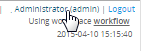
PM_FOLDERS_VIEW
The PM_FOLDERS_VIEW allows a user to view folders and download files under HOME > Documents; but now, all users with the PM_CASES permission have access to Home > Documents. Note that users can only see files from cases that they are designated to work on or have Process Permissions to access.

PM_FOLDERS_ADD_FOLDER
The PM_FOLDERS_ADD_FOLDER permission allows a user to add folders under HOME > Documents.
PM_FOLDERS_ADD_FILE
The PM_FOLDERS_ADD_FILE permission allows a user to add and delete files under HOME > Documents.
PM_DELETECASE
Only cases that are still in their first task can be deleted, meaning that they can be removed from the database. Once cases are routed onto subsequent tasks, they can only be canceled, not deleted. Any user who is designated to work on the first task of a case can delete it by opening the case and selecting Actions > Delete from the menu.
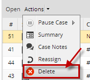
The PM_DELETECASE permission allows cases on their first tasks to be deleted by a user who is NOT designated to work on the first task. However, the only way a non-designated user can open a case to delete it is to be a Process Supervisor and access the case by going to Home > Review.
Note: When a case is deleted, its record is removed from the wf_
PM_CANCELCASE
The PM_CANCELCASE permission allows a user to cancel cases that have been assigned to him/her, cases that he/she has participated in and cases that the user can search as a Process Supervisor under HOME > Review. This means:
- If a user has permission to only see the cases that he/she is assigned to, he/she will be able to cancel those cases.
- If a user has the PM_ALLCASES permission in addition to the PM_CANCELCASE permission, the user will be able to cancel any case through Advanced Search.
- If a user has the PM_SUPERVISOR permission in addition to PM_CANCELCASE, the user will be able to cancel all the cases that are in the review case list (where the cases of the process where he/she is supervisor will be displayed).
http://{pm-server}/sys{workspace}/en/neoclassic/oauth2/applications- If a non-supervisor user is assigned with this permission, the user will NOT be able to reassign cases until he/she is marked as a Process Supervisor.
- If the PM_REASSIGN_SUPERVISOR permission is assigned to a supervisor user (PM_SUPERVISOR) but the user is not currently assigned to a process, then he/she can NOT reassign any cases.
- If any of the previous conditions fail then the following message will be displayed:
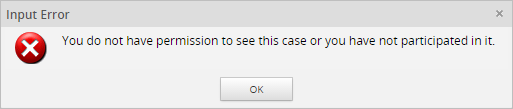 - Code: Enter a unique identifier for the role.
- Name: Enter a name for the role, which will be displayed in the role list.
- Status: Select whether the role is active or inactive. A role that is set to "Inactive" can not be assigned to users.
Cases can be canceled by opening a case and going Action > Cancel.
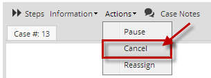
When a case is canceled, its status is changed to Canceled and it can no longer be worked on. The case can still be opened in read-only mode by going to Home > Participated or Home > Advanced Search, where its data can be accessed, but not changed. Cases on their first task can only be deleted, not canceled.
The PM_CANCELCASE permission should be accompanied by the PM_CASES permission to access the HOME menu. To cancel other users' cases, it should also be accompanied by the PM_SUPERVISOR permission.
Note 1: Once a case has been canceled, there is no way to uncancel it in the ProcessMaker interface; however, it is possible to uncancel a case with the PMFUnCancelCase() function.
PM_FOLDER_DELETE
The PM_FOLDER_DELETE permission allows a user to delete a folder under HOME > Documents.
PM_SETUP_LOGO
The PM_SETUP_LOGO permission allows users to edit the logo shown in the upper left corner. By default, ProcessMaker's logo appears at the top of the screen, but it can be replaced with the logo of your business or organization. This permission must be accompanied by the PM_SETUP permission to gain access to the ADMIN menu. For more information, please read the Logo information page.

PM_SETUP_EMAIL
The PM_SETUP_EMAIL permission allows users to configure emails servers to allow ProcessMaker to send out email notifications. This permission must be accompanied by the PM_SETUP permission to gain access to the ADMIN menu. For more information, please check out the Manage Multiple Email Accounts page.

PM_SETUP_CALENDAR
The PM_SETUP_CALENDAR permission allows users to configure calendars that allow process designers to specify the hours and days when users are expected to be at work, so that the due dates for tasks can be more accurately calculated. This permission must be accompanied by the PM_SETUP permission to gain access to the ADMIN menu. For more information, please check out the Calendars page.
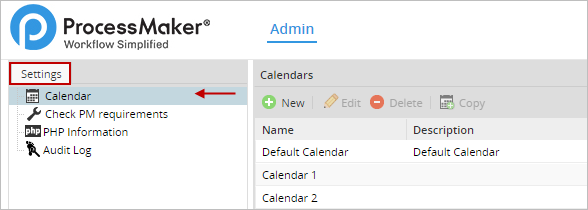
PM_SETUP_PROCESS_CATEGORIES
The PM_SETUP_PROCESS_CATEGORIES permission allows users to manage process categories. This permission must be accompanied by the PM_SETUP permission. For more information, please check out the Process Categories page.
.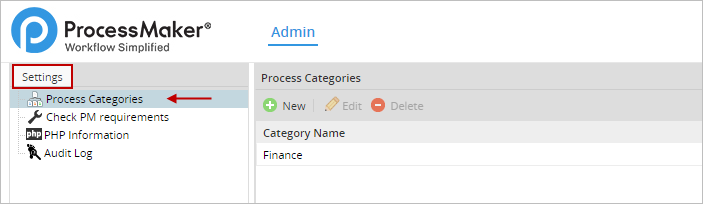
PM_SETUP_CLEAR_CACHE
The PM_SETUP_CLEAR_CACHE permission allows users to clear the ProcessMaker cache to speed up ProcessMaker or avoid possible issues. This permission works along with the PM_SETUP permission. For more information, please check the Clear Cache page.
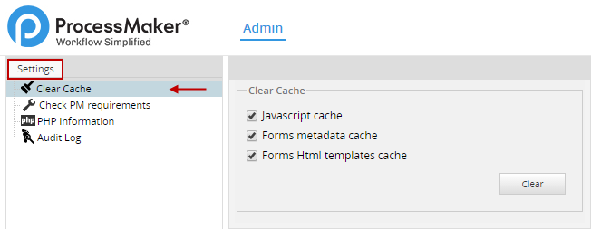
PM_SETUP_HEART_BEAT
The PM_SETUP_HEART_BEAT permission allows users to send statistics to the ProcessMaker developers about how ProcessMaker is being used, including information about the number of workspaces, processes, users and cases. This permission must be accompanied by the PM_SETUP permission. For more information, please check out the Heart Beat page.
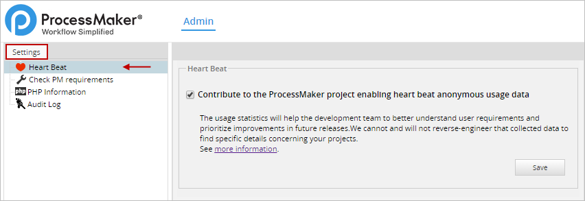
PM_SETUP_ENVIRONMENT
The PM_SETUP_ENVIRONMENT permission allows users to configure the ProcessMaker Environment settings. This permission must be accompanied by the PM_SETUP permission. For more information, please check out the Environment Settings page.
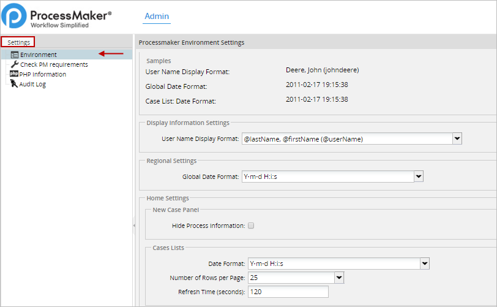
PM_SETUP_PM_TABLES
The PM_SETUP_PM_TABLES permission allows users to manage PM Tables that store data used in Dynaforms or Output Documents. This permission must be accompanied by the PM_SETUP permission. For more information, please check out the PM Tables page.

PM_SETUP_LOGIN
The PM_SETUP_LOGIN permission allows users to configure the Login Settings. Users with this permission can choose the default language for the current workspace, and either enable or disable the Forgot Password option. This permission must be accompanied by the PM_SETUP permission. For more information, please read the Login Settings page.
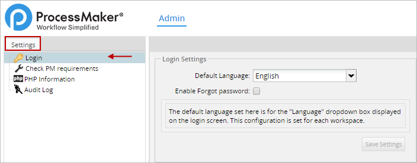
PM_SETUP_DASHBOARDS
The PM_SETUP_DASHBOARDS permission allows users to manage Dashlets Instances. This permission must be accompanied by the PM_SETUP and the PM_DASHBOARD permission. For more information, please check out the Dashboards page.
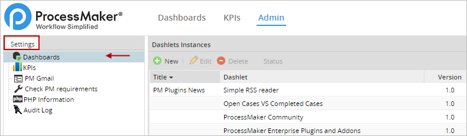
PM_SETUP_LANGUAGE
The PM_SETUP_LANGUAGE permission allows users to manage languages in ProcessMaker. This permission must be accompanied by the PM_SETUP and the PM_SETUP_ADVANCE permissions to gain access to the Admin menu.For more information, please check out the Languages page.
.
PM_SETUP_SKIN
The PM_SETUP_SKIN permission allows users to change the visual appearance of the ProcessMaker interface. This permission must be accompanied by the PM_SETUP permission to gain access to the Admin menu. For more information, please check out the Skins page.
.
PM_SETUP_CASES_LIST_CACHE_BUILDER
The PM_SETUP_CASES_LIST_CACHE_BUILDER permission allows users to rebuild the Cases List Cache. This permission must be accompanied by the PM_SETUP and the PM_SETUP_ADVANCE permissions to gain access to the Admin menu. For more information, please check out the Clearing the Case List Cache page.
.
PM_SETUP_PLUGINS
The PM_SETUP_PLUGINS permission gives users access to the Plugins tab. This permission must be accompanied by the PM_SETUP and the PM_SETUP_ADVANCE permissions to gain access to the ADMIN menu. For more information, please check out the Plugins page.
.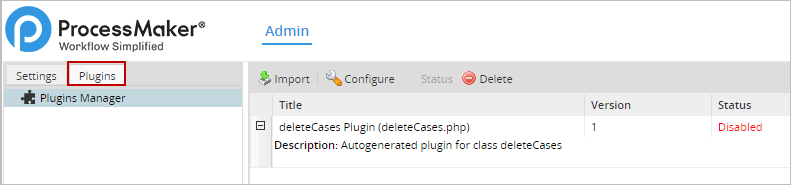
PM_SETUP_USERS_AUTHENTICATION_SOURCES
The PM_SETUP_USERS_AUTHENTICATION_SOURCES permission allows users to configure properties to authenticate external users. This permission must be accompanied by the PM_SETUP, the PM_SETUP_ADVANCE and the PM_USERS permission. For more information, please check out the External Authentication page.
.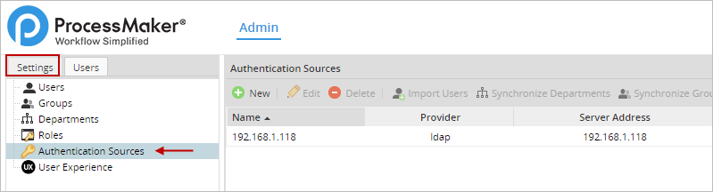
PM_SETUP_LOGS
The PM_SETUP_LOGS permission allows users to access the Logs tab. This permission must be accompanied by the PM_SETUP permission. For more information, please check out the Logs page.
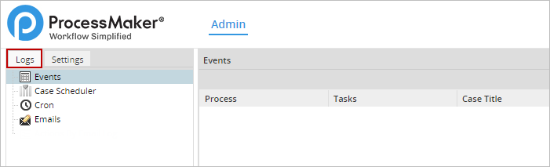
PM_DELETE_PROCESS_CASES
The PM_DELETE_PROCESS_CASES permission enables an additional button in the toolbar inside the Designer menu. The Delete Cases button allows users to delete all cases of a specific process.
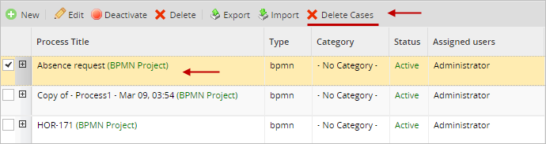
PM_EDITPERSONALINFO_CALENDAR
The PM_EDITPERSONALINFO_CALENDAR permission allows users to change their calendar preference in their profile accounts without the PM_USERS permission in their role. The calendar preference of a user can be edited by clicking on his/her username in the upper right-hand corner of the ProcessMaker header.

And selecting the Edit button at the end of the profile page.
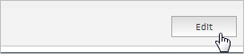
In the Calendar dropdown field, select a new calendar for the user.
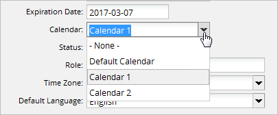
Note: PM_EDITPERSONALINFO_CALENDAR works along with the PM_SETUP permission and the PM_EDITPERSONALINFO permission.
PM_UNCANCELCASE
The PM_UNCANCELCASE permission allows users to uncancel cases with the help of the PMFUnCancelCase() function. Notice that only roles with this permission are able to uncancel a case.
PM_REST_API_APPLICATIONS
The PM_REST_API_APPLICATIONS permission allows users to access the User External Applications section. Only users with this permission assigned to their role have access to the following address:
Otherwise, the user will be warned that he/she does not have the right to access the page.

Permissions to Edit the User Profile
The following permissions allow users to edit the information contained in the User Profile. Each field or section of the user profile has one permission assigned.
| Permission | Field |
|---|---|
| PM_EDIT_USER_PROFILE_FIRST_NAME | Allows users to edit the First Name field of the user profile. |
| PM_EDIT_USER_PROFILE_LAST_NAME | Allows users to edit the Last Name field of the user profile. |
| PM_EDIT_USER_PROFILE_USERNAME | Allows users to edit the Username field of the user profile. |
| PM_EDIT_USER_PROFILE_EMAIL | Allows users to edit the Email field of the user profile. |
| PM_EDIT_USER_PROFILE_ADDRESS | Allows users to edit the Address field of the user profile. |
| PM_EDIT_USER_PROFILE_ZIP_CODE | Allows users to edit the Zip code field of the user profile. |
| PM_EDIT_USER_PROFILE_COUNTRY | Allows users to edit the Country field of the user profile. |
| PM_EDIT_USER_PROFILE_STATE_OR_REGION | Allows users to edit the State or Region field of the user profile. |
| PM_EDIT_USER_PROFILE_LOCATION | Allows users to edit the Location field of the user profile. |
| PM_EDIT_USER_PROFILE_PHONE | Allows users to edit the Phone field of the user profile. |
| PM_EDIT_USER_PROFILE_POSITION | Allows users to edit the Position field of the user profile. |
| PM_EDIT_USER_PROFILE_REPLACED_BY | Allows users to edit the Replaced by field of the user profile. |
| PM_EDIT_USER_PROFILE_EXPIRATION_DATE | Allows users to edit the Expiration Date field of the user profile. |
| PM_EDIT_USER_PROFILE_CALENDAR | Allows users to edit the Calendar field of the user profile. |
| PM_EDIT_USER_PROFILE_STATUS | Allows users to edit the Status field of the user profile. |
| PM_EDIT_USER_PROFILE_ROLE | Allows users to edit the Role field of the user profile. |
| PM_EDIT_USER_PROFILE_TIME_ZONE | Allows users to edit the Time Zone field of the user profile. |
| PM_EDIT_USER_PROFILE_DEFAULT_LANGUAGE | Allows users to edit the Default Language field of the user profile. |
| PM_EDIT_USER_PROFILE_COSTS | Allows users to edit the Cost by hour and Units fields of the user profile. |
| PM_EDIT_USER_PROFILE_PASSWORD | Allows users to edit the Password field of the user profile. |
| PM_EDIT_USER_PROFILE_USER_MUST_CHANGE_PASSWORD_AT_NEXT_LOGON | Allows users to edit the User must change password at next logon field of the user profile. |
| PM_EDIT_USER_PROFILE_PHOTO | Allows users to edit the Photo field of the user profile. |
| PM_EDIT_USER_PROFILE_DEFAULT_MAIN_MENU_OPTIONS | Allows users to edit the Default Main Menu Option field of the user profile. |
| PM_EDIT_USER_PROFILE_DEFAULT_CASES_MENU_OPTIONS | Allows users to edit the Default Cases Menu option field of the user profile. |
The PM_EDIT_USER_PROFILE_* permissions need to be accompanied by the PM_USERS permission. To edit any field in the user profile of any registered user go to ADMIN > Users > Users.
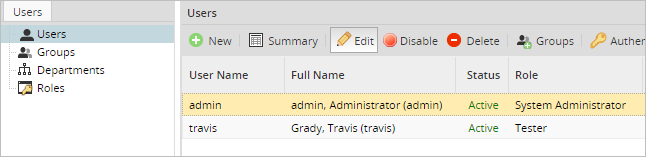
Once under the Users tab, select the user and click on the Edit button. The form used to create the user will open, displaying the user's personal information where the enabled fields (depending on the corresponding permissions assigned to the user’s role) may be edited.
For example, if the user’s role contains the PM_EDIT_USER_PROFILE_FIRST_NAME permission (accompanied by the PM_USERS permission) then the first name of the user can be edited in the form.

The PM_EDIT_USER_PROFILE_* permissions need to be accompanied by the PM_EDITPERSONALINFO permission to allow users to modify his/her own profile information.
For example, if the user’s role contains the PM_EDIT_USER_PROFILE_FIRST_NAME permission (accompanied by the PM_EDITPERSONALINFO permission) then the user can modify his/her own first name in the following form.
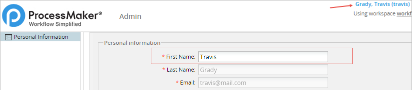
PM_REASSIGNCASE_SUPERVISOR
The PM_REASSIGN_SUPERVISOR permission gives Process Supervisors the ability to re-assign cases of processes they supervise. Therefore, this permission should be accompanied by the PM_SUPERVISOR permission.
This permission enables the Reassign option under the Process Supervisor header in the Home menu's sidebar, which displays a list of all the cases in the workspace that have To Do or Draft status.
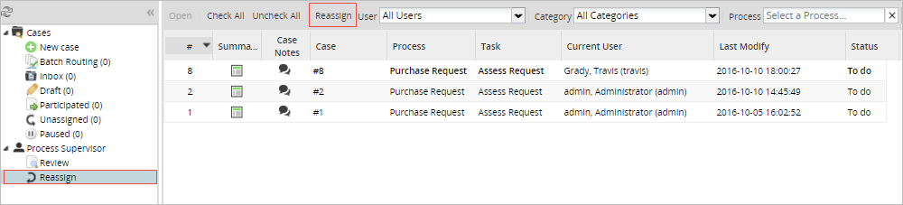
The Process Supervisor can also reassign cases by opening them from the Review option under the Supervisor header and selecting the Actions menu.
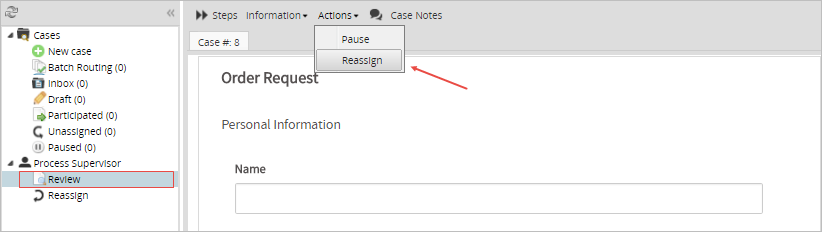
Take note of the following:
To enable the Reassign option for all cases without being assigned as a Supervisor, the user has to be assigned with the PM_REASSIGN permission.
Creating and Editing Roles
If the 3 default roles are not adequate for the users in your organization, custom roles can be created. To create a new role, go to Users > Roles and click on the New link at the top of the list of roles. Then define the properties of the new role.
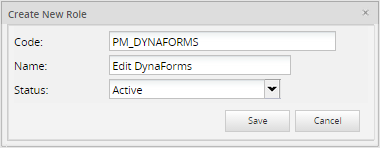
When done defining the role, click on Save to add the new role.
The new role should now appear in the list of roles. Now assign permissions to the new role by clicking on its Permissions link.

Then click on Edit Permissions and a list of the available permissions will appear:

Add one permission to the role by clicking on ">", or add all available permission to the role by clicking on ">>".
To edit the name and properties of an existing role, go to Users > Roles, select the role and click on the Edit link.
To edit the list of permissions in an existing role, go to Users > Roles, select the role and click on the Permissions button.
Note: All roles need to include the PM_LOGIN permission to function correctly. Without PM_LOGIN, the user can't log in to ProcessMaker.